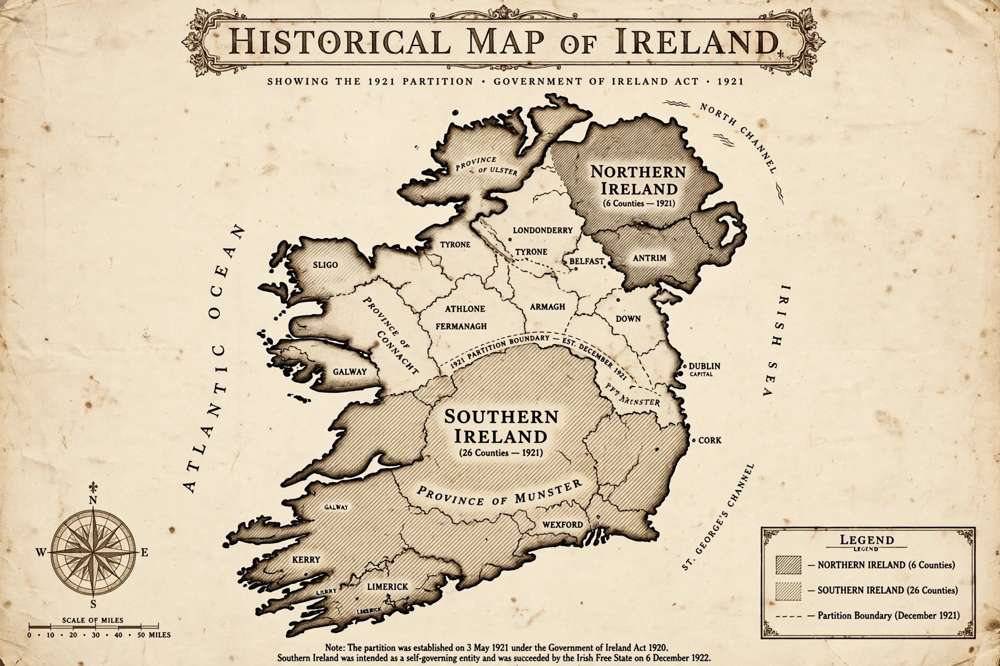

The Government of Ireland Act 1920 was an Act of the Parliament of the United Kingdom. It was the fourth attempt to provide Home Rule for Ireland, and it partitioned the island, creating two devolved parliaments: one for Northern Ireland, comprising six counties of Ulster, and one for Southern Ireland, comprising the remaining 26 counties.
| Government of Ireland Act 1920 | |
|---|---|
| Citation | 10 & 11 Geo. 5 c. 67 |
| Royal assent | 23 December 1920 |
| Commenced | 3 May 1921 |
| Status | Repealed (in part by the Northern Ireland Act 1998) |
| Prime Minister | David Lloyd George |

The Act followed the Government of Ireland Act 1914, which had been suspended for the duration of the First World War, and the Easter Rising of 1916, after which demands escalated from Home Rule to full independence. David Lloyd George's coalition government proposed partition as a compromise that would protect the unionist majority in the north-east while offering self-government to the nationalist south — the culmination of a long struggle driven by Irish nationalism.
The Act created bicameral parliaments in Belfast and Dublin, each with a Senate and a House of Commons elected by proportional representation, subordinate to Westminster, which retained control of defence, foreign affairs, and major taxation. A Council of Ireland was intended to foster cooperation and eventual reunification.
The Parliament of Northern Ireland opened in June 1921 and functioned until its abolition in 1973. Southern Ireland's parliament never effectively operated: Sinn Féin treated the 1921 elections as elections to the Second Dáil. The Anglo-Irish Treaty of December 1921 superseded the Act in the south, creating the Irish Free State in 1922. The Act remained the constitutional basis of Northern Ireland until the Northern Ireland Constitution Act 1973, and its remaining provisions were repealed following the Good Friday Agreement.